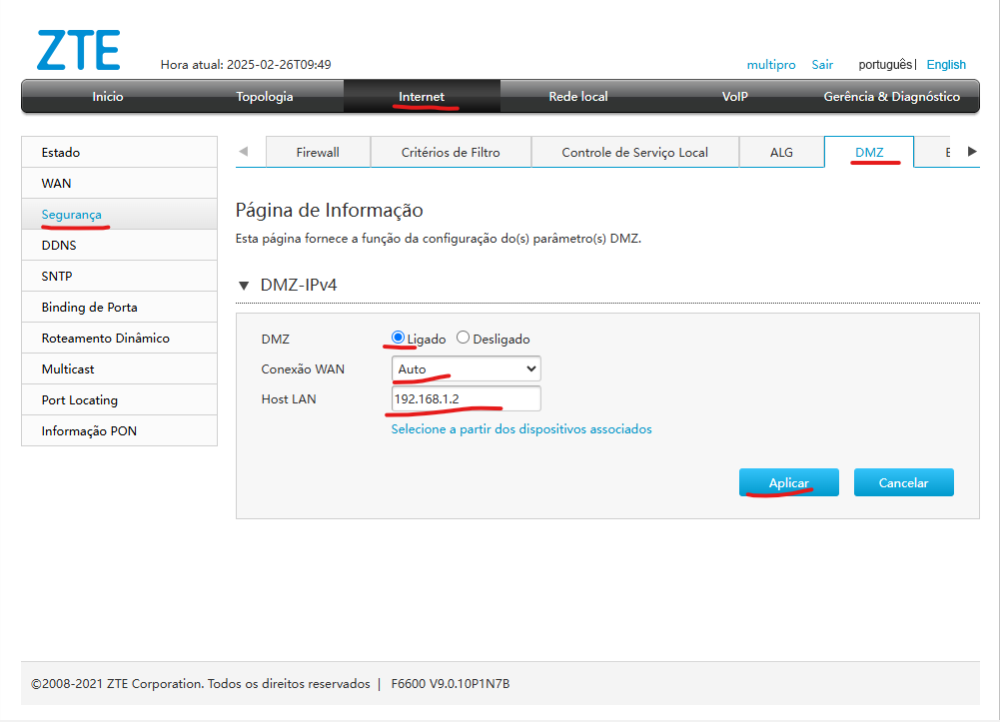
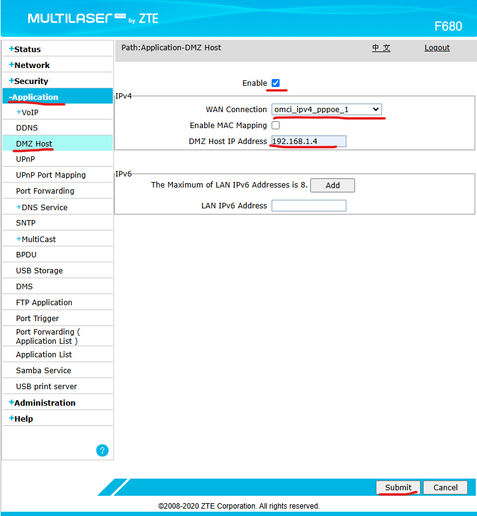

DMZ - CAT | TrixNet
Oque é um DMZ ?
DMZ (Demilitarized Zone, ou Zona Desmilitarizada) é uma configuração de rede usada para expor um dispositivo ou servidor diretamente à internet, reduzindo as restrições do firewall do roteador. Isso é útil para hospedar servidores de jogos, acessar dispositivos remotamente ou rodar serviços que precisam de acesso externo sem tantas limitações.
Passo a passo de como acessar DMZ F6600 (Interface cinza)
Para acessar o recurso DMZ na ONU cinza, segue abaixo:
1. Acesse Internet>Segurança>DMZ
2. Vai ligar o DMZ, deixar a conexão WAN em Auto e adicionar o IP do dispositivo local que o assinante desejar realizaro DMZ
3. Após isso, só aplicar.
Passo a passo de como acessar DMZ F680 (Interface azul)
Para acessar o recurso DMZ na ONU azul, segue abaixo:
1. Acesse Application>DMZ Host
2. Enable no DMZ, WAN Connection deixar com o da discagem e o IP desejado pelo assinante.
3. Clique o Submit para finalizar.
⚠️ Importante
Sempre que for realizar um DMZ, importante estar fixando o IP local no roteador: Fixar IP local